Korail Talk
A redesign that helps first-time visitors to Korea book train tickets on their own — search places, not station names.
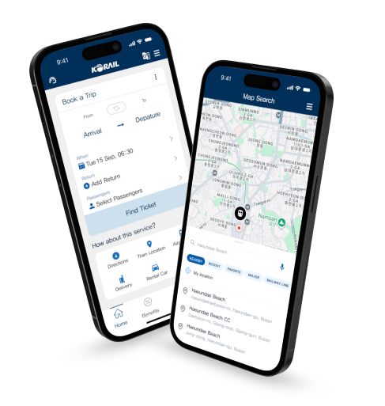
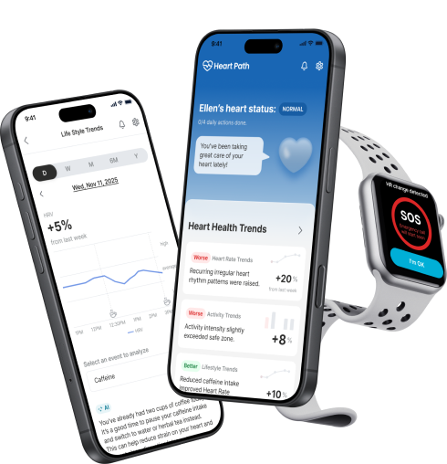
Your heart, clearly
People often check their health data, but they don’t always understand what those numbers actually mean. To reduce this anxiety, we designed an experience that translates data into meaning and guides users toward clear, actionable steps.
View Prototype1-1. Background
Watching a family member live with arrhythmia, I realized that the anxiety patients feel comes not from the condition itself, but from the uncertainty of when symptoms will occur.
1-2. Designer’s Note
1-3. Secondary Research (Desk Research)
Heart disease is usually associated with older people. But according to HIRA (Health Insurance Review & Assessment Service), the number of patients in their 20s and 30s is rising. This increase is linked to unhealthy lifestyle habits.
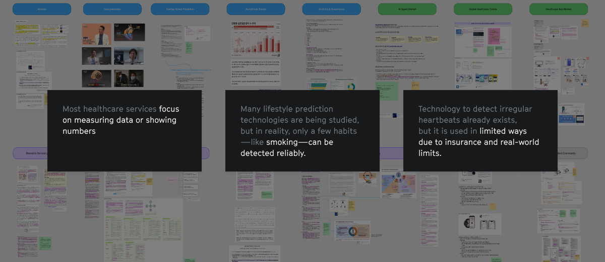
1-4. Primary Research (Survey)
Survey results showed that users actively measure and monitor their condition but struggle to understand what the data actually means for action.
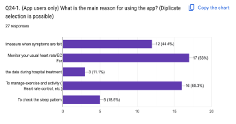
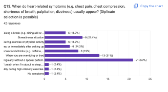
1-5. Designer’s Note
1-6. 1:1 Interview
Users look at the data, but they don’t know what it means. They are not ignoring their symptoms. They are unsure what to do next.
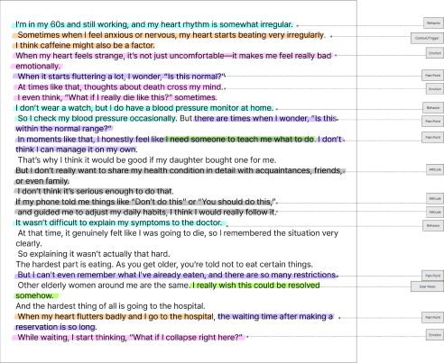
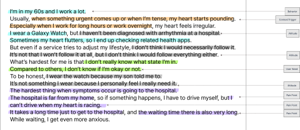
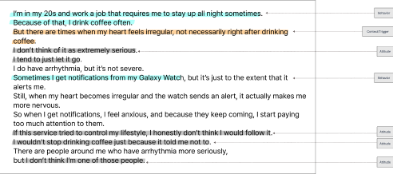
1-7. Thematic Coding
Users check their data, but they don’t know what it means or what to do. So we found two themes: they feel symptoms but take no action, and there is no clear criteria. This shows that the real problem is not a lack of data, but a lack of clear guidance to understand it.
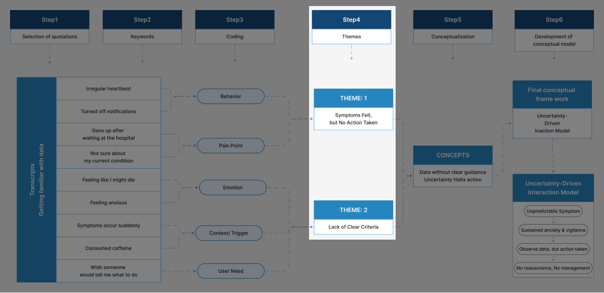
2-1. Persona & User Journey Map
Even with the same heart symptoms, users experience uncertainty in different ways depending on their context and tech literacy. I created two personas to identify the moments where this uncertainty prevents users — both diagnosed and undiagnosed — from taking action.
| Name | Sophia |
|---|---|
| Age | 62 |
| Condition | Diagnosed with arrhythmia, currently taking heart medication. Symptoms worsen during physical labor and hot weather. |
| Goal | Uses a smartphone for basic functions (calls, messages). Not familiar with healthcare apps or wearable devices. Finds new technology difficult and intimidating. |
| Target | Daily Life · Emergency Occurs |
“When my heart beats fast, I don’t know if I should go to the hospital or rest.”
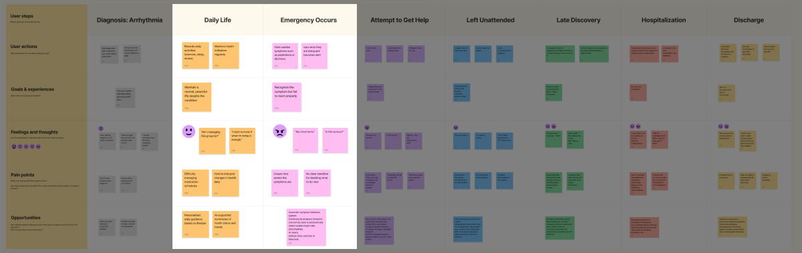
| Name | Mike |
|---|---|
| Age | 33 |
| Condition | Experiences intermittent arrhythmia symptoms. Uses ECG features on Galaxy Watch and smartphone. |
| Tech Usage | Uses Galaxy Watch and mobile ECG regularly. Checks health apps multiple times a day. Shares some health data with family. Comfortable with digital tools but overwhelmed by fragmented data. |
| Target | Routine & Risk · Symptom Onset · AI Emergency Response · Timely Hospital Visit |
“My heart has been beating fast, and I want to know if I am safe.”
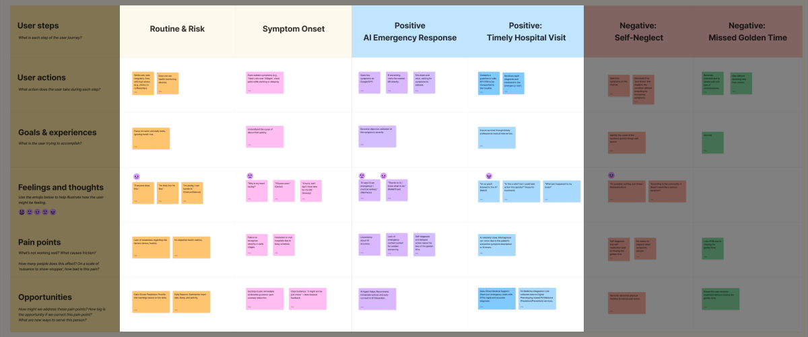
2-2. Affinity Map
Affinity mapping revealed recurring patterns where unclear interpretation led to hesitation, delayed decisions, and inaction.
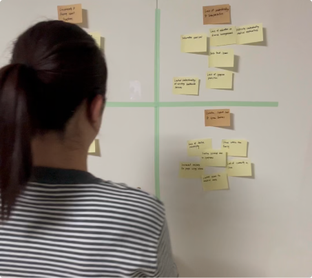
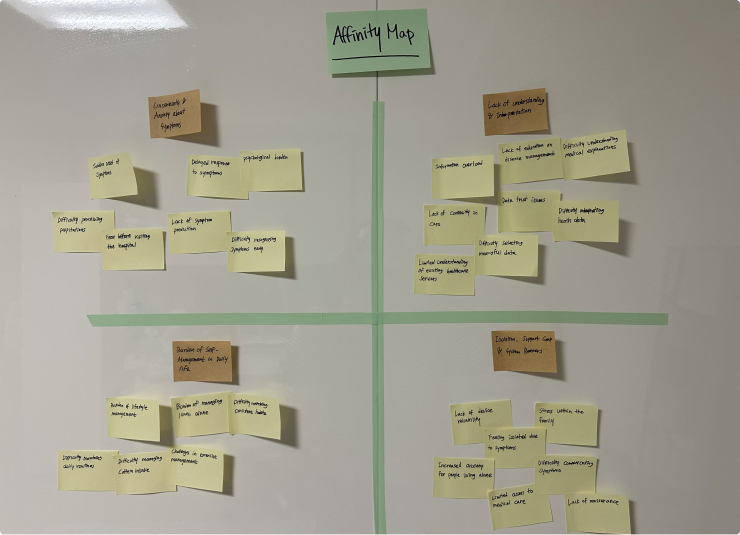
Problem Statement
Users see heart health numbers, but unclear meaning leads to anxiety and inaction.
3-1. Brainstorming
During this process, we focused on three key directions: state interpretation, emotional reassurance, and clear, actionable guidance.
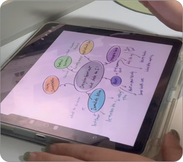
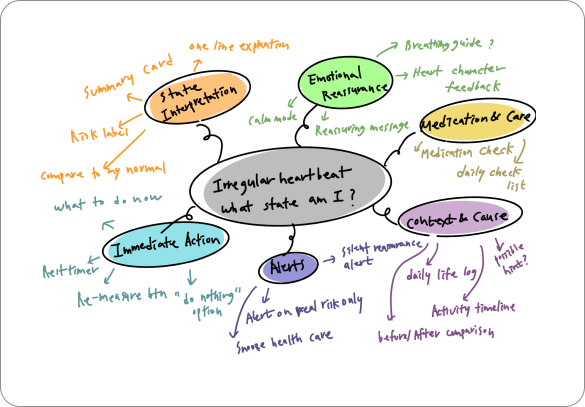
3-2. Feature Ideation & 2×2 Prioritization Matrix
Based on the brainstorming outcomes, feature ideas were organized according to user pain points and evaluated by feasibility and impact. Using a 2×2 prioritization matrix, we identified the 8 core features that would be most effective for the service.
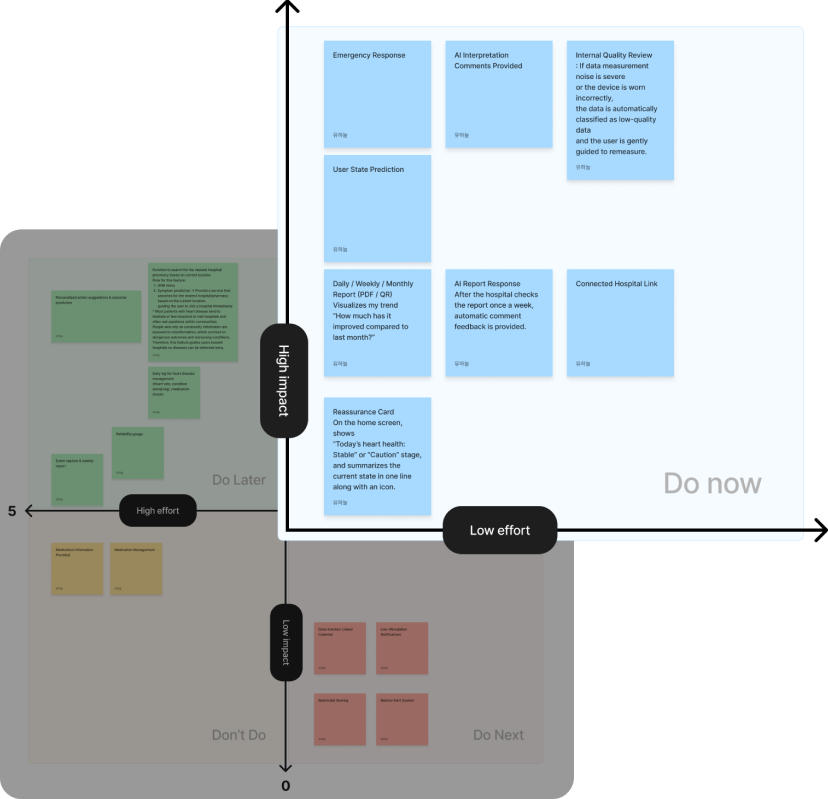
3-3. Sitemap
To prevent users from feeling overwhelmed, the information architecture was designed based on priority and frequency of use. Considering that some users struggle to interpret health data, the home screen presents information in a clear hierarchy — from current status, to why it happened, to what action to take next.
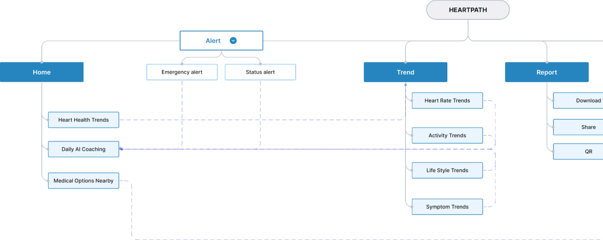
3-4. Sketch
To effectively communicate complex health data, we selected chart types based on the nature of the data and its intended use. Heart rate, which requires understanding trends over time, was visualized using line charts, while activity data, where comparison and status recognition are key, was represented with bar charts to help users quickly understand their current state.
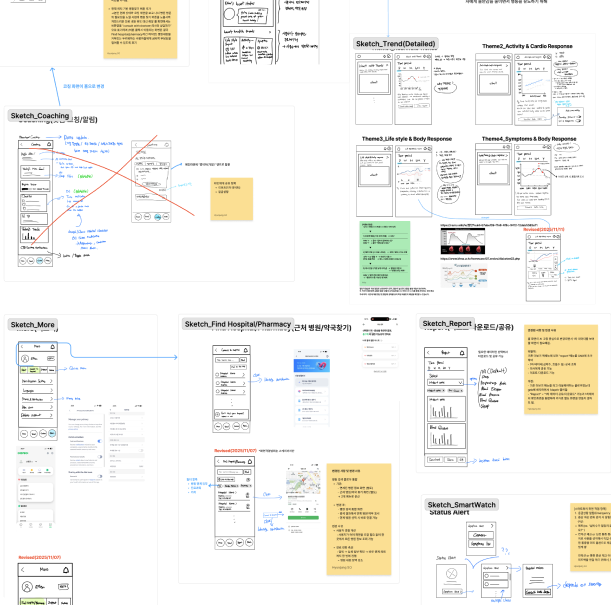
3-5. Wireframe
Based on the structure refined during the sketching phase, wireframes were created with a strong focus on user flow.
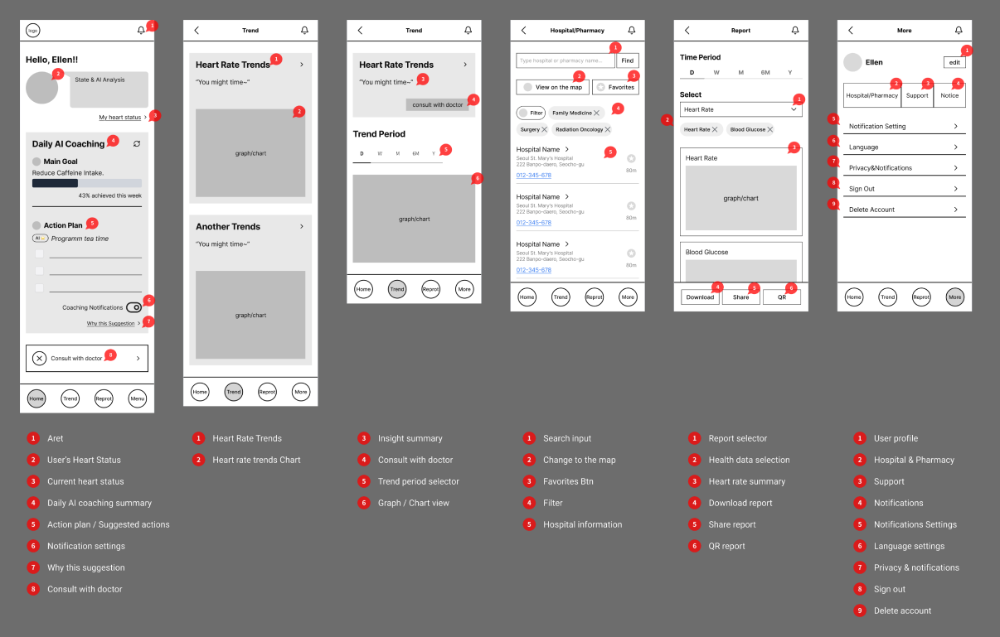
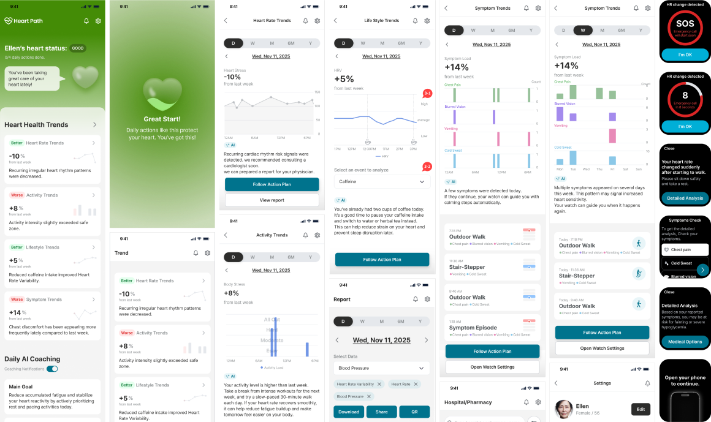
3-6. Deliverables (Screen Specifications & Functional Definition)
I refined wireframes into clear screen specifications, defining UI components, interactions, and state-based conditions. These artifacts were used to align design intent within the design team, reducing ambiguity and ensuring consistency across screens.
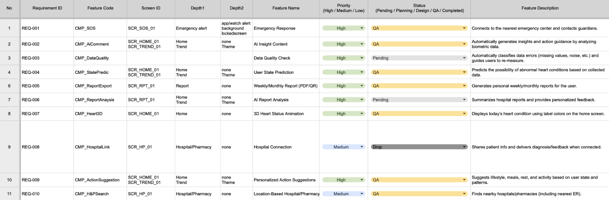
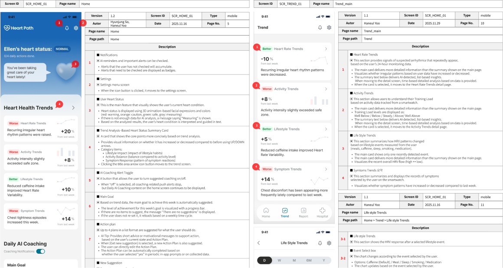
3-7. Design System
A token-based design system built with Figma Variables, separating global foundations from semantic aliases to ensure scalability, consistency, and flexible UI updates.
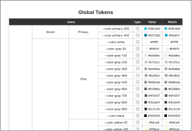
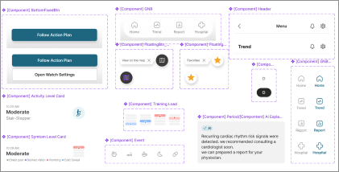
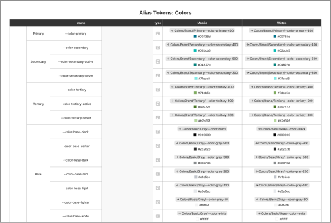
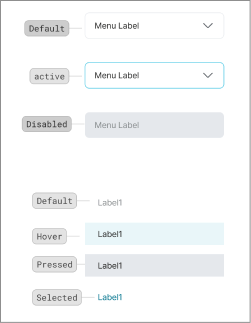
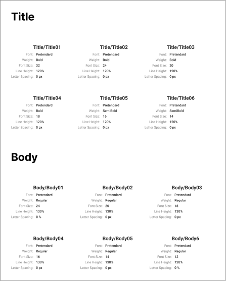
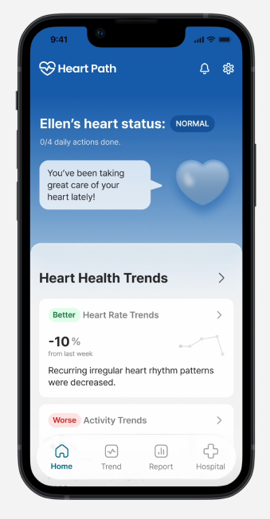
4-1. Main Feature
A multi-use dashboard was designed to help users quickly understand their current state and take appropriate action within a single, seamless flow.
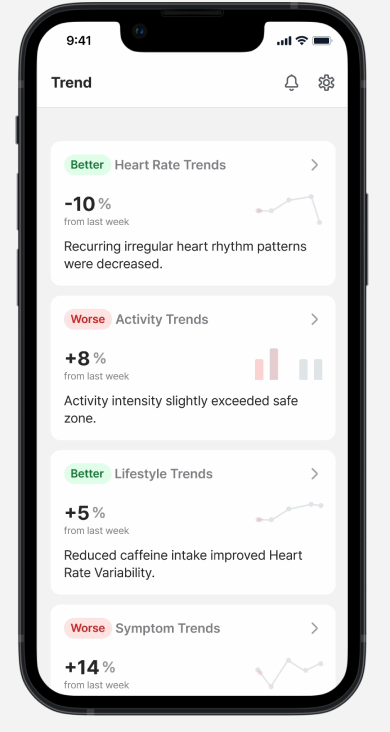
4-2. Main Feature
Health data is visualized around patterns and context, not raw metrics. Paired with AI insights, users can quickly understand changes and decide what to do next.
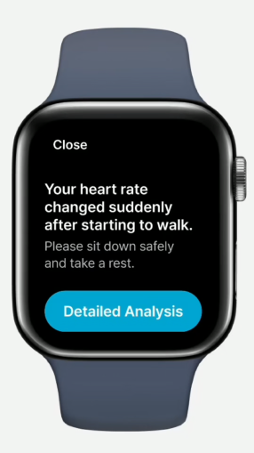
4-3. Main Feature
Instead of showing raw heart rate data, it combines pattern analysis with user-reported symptoms to turn the data into meaningful, context-aware insights.
5-1. Usability Test
Usability testing with five arrhythmia or suspected arrhythmia users showed that older participants had difficulty interpreting health data, reinforcing the need for clearer guidance.
5-2. Result of Test
In the early stage, I tested the app with five users to find key usability problems. The results showed that the user in their 60s had the most difficulty understanding the app. This revealed that digital experience strongly affects understanding and decision-making. Based on this insight, we are currently designing an onboarding flow to support users step by step.
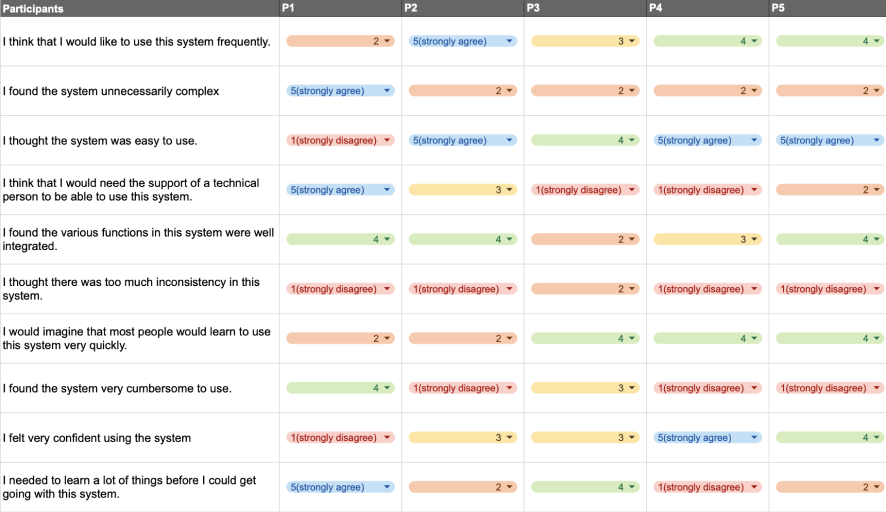
This project was based on interviews with five people living with arrhythmia. However, due to medical ethics and personal data protection regulations, real heart data and hospital records could not be used.
As a result, the design process focused not on clinical accuracy alone, but on how health data is understood by non-expert users, with a strong emphasis on data literacy. Effective visualization helps bridge the cognitive gap. By choosing chart types strategically — bar charts for comparison and line charts for trends — raw biometric data can be transformed into actionable insights for everyday users.
User testing revealed that participants aged 60+ had the lowest usability scores and understanding levels.
To address this, I plan to design a step-by-step onboarding experience and supportive guidance UI for older users, and re-test the improved design.
Through this, I aim to create a more inclusive healthcare experience that supports not only the initial target group of users in their 20s and 30s, but also older adults who may face greater barriers in understanding health data.
A redesign that helps first-time visitors to Korea book train tickets on their own — search places, not station names.

A Web GIS service that lets non-experts reach spatial analysis results just by choosing conditions — complex GIS analysis redesigned as a step-by-step flow. (Ongoing, 2026)